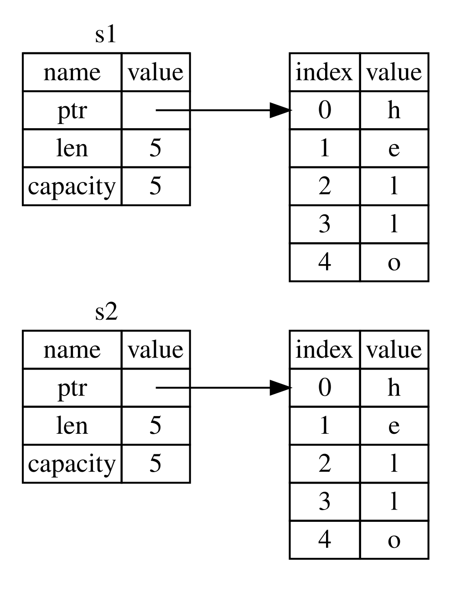

Apa Itu Kepemilikan?
Kepemilikan (Ownership) adalah seperaturan yang mengatur bagaimana program Rust mengelola memori. Semua program harus mengelola cara mereka menggunakan memori komputer saat berjalan. Beberapa bahasa memiliki garbage collection yang secara teratur mencari memori yang tidak lagi digunakan saat program berjalan; di bahasa lain, programmer harus secara eksplisit mengalokasikan dan membebaskan memori. Rust menggunakan pendekatan ketiga: Memori dikelola melalui sistem kepemilikan dengan seperaturan yang diperiksa oleh compiler. Jika ada aturan yang dilanggar, program tidak akan kompilasi. Tidak ada fitur kepemilikan yang akan memperlambat program Anda saat berjalan.
Karena kepemilikan adalah konsep baru bagi banyak programmer, butuh waktu untuk terbiasa. Kabar baiknya adalah semakin berpengalaman Anda dengan Rust dan aturan sistem kepemilikan, semakin mudah Anda akan menemukannya untuk secara alami mengembangkan kode yang aman dan efisien. Tetap semangat!
Saat Anda memahami kepemilikan, Anda akan memiliki fondasi yang solid untuk memahami fitur-fitur yang membuat Rust unik. Di bab ini, Anda akan belajar kepemilikan dengan mengerjakan beberapa contoh yang berfokus pada struktur data sangat umum: string.
Stack dan Heap
Banyak bahasa pemrograman tidak mewajibkan Anda memikirkan stack dan heap terlalu sering. Tetapi di bahasa pemrograman sistem seperti Rust, apakah nilai berada di stack atau heap memengaruhi bagaimana bahasa berperilaku dan mengapa Anda harus membuat keputusan tertentu. Bagian-bagian kepemilikan akan dijelaskan berhubungan dengan stack dan heap nanti di bab ini, jadi ini penjelasan singkat sebagai persiapan.
Baik stack maupun heap adalah bagian memori yang tersedia untuk kode Anda untuk digunakan pada runtime, tapi mereka terstruktur dengan cara berbeda. Stack menyimpan nilai dalam urutan ia mendapatkannya dan menghapus nilai dalam urutan terbalik. Ini disebut last in, first out (LIFO). Bayangkan tumpukan piring: Saat Anda menambah piring, Anda meletakkannya di atas tumpukan, dan saat Anda butuh piring, Anda mengambil satu dari atas. Menambah atau menghapus piring dari tengah atau bawah tidak akan bekerja dengan baik! Menambah data disebut pushing onto the stack, dan menghapus data disebut popping off the stack. Semua data yang disimpan di stack harus memiliki ukuran yang diketahui dan tetap. Data dengan ukuran tidak diketahui pada waktu kompilasi atau ukuran yang mungkin berubah harus disimpan di heap sebagai gantinya.
Heap kurang terorganisir: Saat Anda meletakkan data di heap, Anda meminta jumlah ruang tertentu. Alokator memori menemukan tempat kosong di heap yang cukup besar, menandainya sebagai digunakan, dan mengembalikan pointer, yaitu alamat lokasi itu. Proses ini disebut allocating on the heap dan kadang disingkat hanya allocating (memasukkan nilai ke stack tidak dianggap allocating). Karena pointer ke heap memiliki ukuran yang diketahui dan tetap, Anda bisa menyimpan pointer di stack, tapi saat Anda ingin data aktual, Anda harus mengikuti pointer. Bayangkan duduk di restoran. Saat masuk, Anda menyatakan jumlah orang di grup Anda, dan host menemukan meja kosong yang muat semua dan mengantarkan Anda ke sana. Jika seseorang di grup Anda datang terlambat, ia bisa bertanya di mana Anda duduk untuk menemukan Anda.
Memasukkan ke stack lebih cepat dari mengalokasikan di heap karena alokator tidak pernah harus mencari tempat untuk menyimpan data baru; lokasi itu selalu di puncak stack. Secara relatif, mengalokasikan ruang di heap memerlukan lebih banyak kerja karena alokator harus pertama kali menemukan ruang cukup besar untuk menampung data dan kemudian melakukan bookkeeping untuk persiapan alokasi berikutnya.
Mengakses data di heap umumnya lebih lambat dari mengakses data di stack karena Anda harus mengikuti pointer untuk sampai ke sana. Processor kontemporer lebih cepat jika mereka lompat lebih sedikit di memori. Melanjutkan analogi, pertimbangkan pelayan di restoran yang mengambil pesanan dari banyak meja. Paling efisien adalah mengambil semua pesanan di satu meja sebelum pindah ke meja berikutnya. Mengambil pesanan dari meja A, lalu dari meja B, lalu dari A lagi, dan lalu dari B lagi akan menjadi proses yang jauh lebih lambat. Dengan alasan yang sama, processor biasanya bisa melakukan pekerjaannya lebih baik jika ia bekerja pada data yang dekat dengan data lain (seperti di stack) bukan jauh (seperti bisa jadi di heap).
Saat kode Anda memanggil fungsi, nilai-nilai yang diteruskan ke fungsi (termasuk, berpotensi, pointer ke data di heap) dan variabel lokal fungsi didorong ke stack. Saat fungsi berakhir, nilai-nilai itu dikeluarkan dari stack.
Melacak bagian kode apa yang menggunakan data apa di heap, meminimalkan jumlah data duplikat di heap, dan membersihkan data yang tidak digunakan di heap sehingga Anda tidak kehabisan ruang adalah semua masalah yang diatasi oleh kepemilikan. Begitu Anda memahami kepemilikan, Anda tidak perlu memikirkan stack dan heap terlalu sering. Tapi mengetahui bahwa tujuan utama kepemilikan adalah mengelola data heap bisa membantu menjelaskan mengapa cara kerjanya seperti itu.
Aturan Kepemilikan
Pertama, mari lihat aturan kepemilikan. Simak aturan ini saat kami mengerjakan contoh yang mengilustrasikannya:
- Setiap nilai di Rust memiliki owner (pemilik).
- Hanya bisa ada satu pemilik pada satu waktu.
- Saat pemilik keluar dari ruang lingkup (scope), nilai akan di-drop (dibebaskan).
Ruang Lingkup Variabel
Sekarang setelah kita lewat sintaks Rust dasar, kami tidak akan menyertakan
semua kode fn main() { di contoh, jadi jika Anda mengikuti, pastikan untuk
menempatkan contoh-contoh berikut di dalam fungsi main secara manual. Hasilnya,
contoh kami akan sedikit lebih ringkas, memungkinkan kami fokus pada detail
aktual daripada kode boilerplate.
Sebagai contoh pertama kepemilikan, kami akan melihat ruang lingkup beberapa variabel. Sebuah ruang lingkup adalah rentang di dalam program untuk item mana valid. Ambil variabel berikut:
#![allow(unused)]
fn main() {
let s = "hello";
}Variabel s merujuk ke string literal, di mana nilai string di-hardcode ke
teks program kita. Variabel valid dari titik dideklarasikannya hingga akhir
ruang lingkup saat ini. Listing 4-1 menunjukkan program dengan komentar yang
menganotasi di mana variabel s akan valid.
fn main() {
{ // s is not valid here, since it's not yet declared
let s = "hello"; // s is valid from this point forward
// do stuff with s
} // this scope is now over, and s is no longer valid
}Dengan kata lain, ada dua titik waktu penting di sini:
- Saat
smasuk ke ruang lingkup, ia valid. - Ia tetap valid hingga keluar dari ruang lingkup.
Pada titik ini, hubungan antara ruang lingkup dan kapan variabel valid mirip
dengan yang di bahasa pemrograman lain. Sekarang kami akan membangun di atas
pemahaman ini dengan memperkenalkan tipe String.
Tipe String
Untuk mengilustrasikan aturan kepemilikan, kami butuh tipe data yang lebih
kompleks dari yang kami bahas di bagian “Tipe Data”
Bab 3. Tipe yang dibahas sebelumnya memiliki ukuran yang diketahui, bisa
disimpan di stack dan di-pop dari stack saat ruang lingkupnya berakhir, dan
bisa dengan cepat dan sepele disalin untuk membuat instance baru, independen,
jika bagian lain kode perlu menggunakan nilai yang sama di ruang lingkup
berbeda. Tapi kami ingin melihat data yang disimpan di heap dan mengeksplorasi
bagaimana Rust tahu kapan membersihkan data itu, dan tipe String adalah
contoh yang bagus.
Kami akan berkonsentrasi pada bagian String yang berkaitan dengan
kepemilikan. Aspek-aspek ini juga berlaku untuk tipe data kompleks lain, apakah
disediakan oleh pustaka standar atau dibuat oleh Anda. Kami akan membahas
aspek non-kepemilikan String di Bab 8.
Kami sudah melihat string literal, di mana nilai string di-hardcode ke program
kami. String literal praktis, tapi tidak cocok untuk setiap situasi di mana
kami ingin menggunakan teks. Alasannya adalah mereka tidak dapat diubah
(immutable). Alasan lain adalah tidak setiap nilai string bisa diketahui saat
kami menulis kode: Misalnya, bagaimana jika kami ingin mengambil masukan
pengguna dan menyimpannya? Untuk situasi inilah Rust memiliki tipe String.
Tipe ini mengelola data yang dialokasikan di heap dan sebagai bentuknya mampu
menyimpan jumlah teks yang tidak diketahui oleh kami pada waktu kompilasi. Anda
bisa membuat String dari string literal menggunakan fungsi from, seperti
ini:
#![allow(unused)]
fn main() {
let s = String::from("hello");
}Operator titik dua ganda :: memungkinkan kami membuat namespace fungsi from
khusus ini di bawah tipe String alih-alih menggunakan semacam nama seperti
string_from. Kami akan membahas sintaks ini lebih lanjut di bagian
“Metode” Bab 5, dan saat kami membahas namespacing
dengan modul di “Jalur untuk Merujuk Item di Pohon Modul” di Bab 7.
Jenis string ini bisa dimutasi:
fn main() {
let mut s = String::from("hello");
s.push_str(", world!"); // push_str() appends a literal to a String
println!("{s}"); // this will print `hello, world!`
}Jadi, apa perbedaannya di sini? Mengapa String bisa dimutasi tapi literal
tidak? Perbedaannya ada pada cara kedua tipe ini berurusan dengan memori.
Memori dan Alokasi
Dalam kasus string literal, kami mengetahui isinya pada waktu kompilasi, jadi teks di-hardcode langsung ke executable final. Inilah mengapa string literal cepat dan efisien. Tapi properti ini hanya berasal dari ketidakberubahan (immutability) string literal. Sayangnya, kami tidak bisa menaruh blob memori ke binary untuk setiap potongan teks yang ukurannya tidak diketahui pada waktu kompilasi dan yang ukurannya mungkin berubah saat menjalankan program.
Dengan tipe String, untuk mendukung potongan teks yang bisa dimutasi dan
berkembang, kami perlu mengalokasikan jumlah memori di heap, yang tidak
diketahui pada waktu kompilasi, untuk menampung isinya. Artinya:
- Memori harus diminta dari alokator memori pada runtime.
- Kami butuh cara mengembalikan memori ini ke alokator saat kami selesai dengan
Stringkami.
Bagian pertama dilakukan oleh kita: Saat kami memanggil String::from,
implementasinya meminta memori yang dibutuhkan. Ini praktisnya universal di
bahasa pemrograman.
Namun, bagian kedua berbeda. Di bahasa dengan garbage collector (GC), GC
melacak dan membersihkan memori yang tidak digunakan lagi, dan kami tidak
perlu memikirkannya. Di kebanyakan bahasa tanpa GC, itu tanggung jawab kami
untuk mengidentifikasi kapan memori tidak lagi digunakan dan memanggil kode
untuk secara eksplisit membebaskannya, sama seperti kami melakukannya untuk
memintanya. Melakukan ini dengan benar historis merupakan masalah pemrograman
yang sulit. Jika kami lupa, kami akan membuang-buang memori. Jika kami
melakukannya terlalu awal, kami akan memiliki variabel tidak valid. Jika kami
melakukannya dua kali, itu juga bug. Kami perlu memasangkan persis satu
allocate dengan persis satu free.
Rust mengambil jalan berbeda: Memori secara otomatis dikembalikan begitu
variabel yang memilikinya keluar dari ruang lingkup. Berikut versi contoh
ruang lingkup kami dari Listing 4-1 menggunakan String alih-alih string
literal:
fn main() {
{
let s = String::from("hello"); // s is valid from this point forward
// do stuff with s
} // this scope is now over, and s is no
// longer valid
}Ada titik alami di mana kami bisa mengembalikan memori yang String butuhkan
ke alokator: saat s keluar dari ruang lingkup. Saat variabel keluar dari
ruang lingkup, Rust memanggil fungsi khusus untuk kita. Fungsi ini disebut
drop, dan di sinilah penulis String bisa menaruh
kode untuk mengembalikan memori. Rust memanggil drop secara otomatis di
tanda kurung kurawal penutup.
Catatan: Di C++, pola dealokasi sumber daya di akhir masa pakai item terkadang disebut Resource Acquisition Is Initialization (RAII). Fungsi
dropdi Rust akan familiar bagi Anda jika Anda pernah menggunakan pola RAII.
Pola ini memiliki dampak mendalam pada cara kode Rust ditulis. Ia mungkin terlihat sederhana sekarang, tapi perilaku kode bisa tak terduga dalam situasi lebih kompleks saat kami ingin beberapa variabel menggunakan data yang kami alokasikan di heap. Mari jelajahi beberapa situasi tersebut sekarang.
Variabel dan Data Berinteraksi dengan Move
Beberapa variabel bisa berinteraksi dengan data yang sama dengan cara berbeda di Rust. Listing 4-2 menunjukkan contoh menggunakan integer.
fn main() {
let x = 5;
let y = x;
}x ke yKami mungkin bisa menebak apa yang dilakukan ini: “Ikat nilai 5 ke x; lalu,
buat salinan nilai di x dan ikat ke y.” Kami kini memiliki dua variabel,
x dan y, dan keduanya sama dengan 5. Ini memang yang terjadi, karena
integer adalah nilai sederhana dengan ukuran yang diketahui dan tetap, dan kedua
nilai 5 ini didorong ke stack.
Sekarang mari lihat versi String:
fn main() {
let s1 = String::from("hello");
let s2 = s1;
}Ini terlihat sangat mirip, jadi kami mungkin mengasumsikan cara kerjanya akan
sama: Artinya, baris kedua akan membuat salinan nilai di s1 dan mengikatnya
ke s2. Tapi ini tidak sepenuhnya yang terjadi.
Lihat Gambar 4-1 untuk melihat apa yang terjadi pada String di bawah
tabirnya. Sebuah String terdiri dari tiga bagian, ditampilkan di kiri: pointer
ke memori yang menampung isi string, panjang, dan kapasitas. Kelompok data ini
disimpan di stack. Di kanan adalah memori di heap yang menampung isinya.

Gambar 4-1: Representasi di memori String yang menampung
nilai "hello" terikat ke s1
Panjang adalah berapa banyak memori, dalam byte, yang digunakan isi String
saat ini. Kapasitas adalah total jumlah memori, dalam byte, yang String
terima dari alokator. Perbedaan antara panjang dan kapasitas penting, tapi
tidak dalam konteks ini, jadi untuk saat ini, tidak apa-apa mengabaikan
kapasitas.
Saat kami menetapkan s1 ke s2, data String disalin, artinya kami menyalin
pointer, panjang, dan kapasitas yang ada di stack. Kami tidak menyalin data
di heap yang dirujuk pointer. Dengan kata lain, representasi data di memori
terlihat seperti Gambar 4-2.

Gambar 4-2: Representasi di memori variabel s2 yang
memiliki salinan pointer, panjang, dan kapasitas s1
Representasi tidak terlihat seperti Gambar 4-3, yang akan menjadi tampilan
memori jika Rust malah menyalin data heap juga. Jika Rust melakukannya,
operasi s2 = s1 bisa sangat mahal dari segi performa runtime jika data di
heap besar.

Gambar 4-3: Kemungkinan lain untuk apa yang s2 = s1
mungkin lakukan jika Rust menyalin data heap juga
Sebelumnya, kami bilang bahwa saat variabel keluar dari ruang lingkup, Rust
secara otomatis memanggil fungsi drop dan membersihkan memori heap untuk
variabel itu. Tapi Gambar 4-2 menunjukkan kedua pointer data menunjuk ke
lokasi yang sama. Ini masalah: Saat s2 dan s1 keluar dari ruang lingkup,
mereka akan keduanya mencoba membebaskan memori yang sama. Ini dikenal sebagai
kesalahan double free dan adalah salah satu bug keamanan memori yang kami
sebutkan sebelumnya. Membebaskan memori dua kali bisa menyebabkan korupsi
memori, yang berpotensi mengarah ke kerentanan keamanan.
Untuk memastikan keamanan memori, setelah baris let s2 = s1;, Rust menganggap
s1 sebagai tidak lagi valid. Oleh karena itu, Rust tidak perlu membebaskan
apa pun saat s1 keluar dari ruang lingkup. Periksa apa yang terjadi saat
Anda mencoba menggunakan s1 setelah s2 dibuat; tidak akan berhasil:
fn main() {
let s1 = String::from("hello");
let s2 = s1;
println!("{s1}, world!");
}Anda akan mendapat kesalahan seperti ini karena Rust mencegah Anda menggunakan referensi yang tidak valid:
$ cargo run
Compiling ownership v0.1.0 (file:///projects/ownership)
error[E0382]: borrow of moved value: `s1`
--> src/main.rs:5:16
|
2 | let s1 = String::from("hello");
| -- move occurs because `s1` has type `String`, which does not implement the `Copy` trait
3 | let s2 = s1;
| -- value moved here
4 |
5 | println!("{s1}, world!");
| ^^ value borrowed here after move
|
help: consider cloning the value if the performance cost is acceptable
|
3 | let s2 = s1.clone();
| ++++++++
For more information about this error, try `rustc --explain E0382`.
error: could not compile `ownership` (bin "ownership") due to 1 previous error
Jika Anda pernah mendengar istilah shallow copy dan deep copy saat
bekerja dengan bahasa lain, konsep menyalin pointer, panjang, dan kapasitas
tanpa menyalin data mungkin terdengar seperti membuat shallow copy. Tapi
karena Rust juga meng-invalidasi variabel pertama, alih-alih disebut shallow
copy, ini dikenal sebagai move. Dalam contoh ini, kami akan bilang bahwa s1
di-move ke s2. Jadi, apa yang sebenarnya terjadi ditunjukkan di Gambar 4-4.

Gambar 4-4: Representasi di memori setelah s1 telah
di-invalidasi
Itu memecahkan masalah kami! Dengan hanya s2 valid, saat ia keluar dari
ruang lingkup ia sendirian akan membebaskan memori, dan kami selesai.
Selain itu, ada pilihan desain yang tersirat oleh ini: Rust tidak akan pernah secara otomatis membuat salinan “deep” data Anda. Oleh karena itu, penyalinan otomatis apa pun bisa diasumsikan murah dari segi performa runtime.
Ruang Lingkup dan Penetapan
Kebalikan ini benar untuk hubungan antara pencakupan (scoping), kepemilikan, dan
memori yang dibebaskan via fungsi drop juga. Saat Anda menetapkan nilai
yang benar-benar baru ke variabel yang sudah ada, Rust akan memanggil drop
dan membebaskan memori nilai asli segera. Pertimbangkan kode ini, misalnya:
fn main() {
let mut s = String::from("hello");
s = String::from("ahoy");
println!("{s}, world!");
}Kami awalnya mendeklarasikan variabel s dan mengikatnya ke String dengan
nilai "hello". Lalu, kami segera membuat String baru dengan nilai "ahoy"
dan menentukannya ke s. Pada titik ini, tidak ada yang merujuk ke nilai
asli di heap sama sekali. Gambar 4-5 mengilustrasikan data stack dan heap
sekarang:

Gambar 4-5: Representasi di memori setelah nilai awal telah diganti sepenuhnya
String asli dengan demikian segera keluar dari ruang lingkup. Rust akan
menjalankan fungsi drop padanya dan memorinya akan dibebaskan segera. Saat
kami mencetak nilai di akhir, itu akan menjadi "ahoy, world!".
Variabel dan Data Berinteraksi dengan Clone
Jika kami memang ingin menyalin data heap String secara deep, bukan hanya
data stack, kami bisa menggunakan metode umum bernama clone. Kami akan
membahas sintaks metode di Bab 5, tapi karena metode adalah fitur umum di
banyak bahasa pemrograman, Anda mungkin sudah pernah melihatnya.
Berikut contoh metode clone dalam aksi:
fn main() {
let s1 = String::from("hello");
let s2 = s1.clone();
println!("s1 = {s1}, s2 = {s2}");
}Ini berfungsi dengan baik dan secara eksplisit menghasilkan perilaku yang ditunjukkan di Gambar 4-3, di mana data heap benar-benar disalin.
Saat Anda melihat pemanggilan clone, Anda tahu bahwa kode arbitrer sedang
dieksekusi dan kode itu mungkin mahal. Ini indikator visual bahwa sesuatu yang
berbeda sedang terjadi.
Data Hanya-Stack: Copy
Ada kerutan lain yang belum kami bicarakan. Kode ini menggunakan integer—bagian dari yang ditunjukkan di Listing 4-2—berfungsi dan valid:
fn main() {
let x = 5;
let y = x;
println!("x = {x}, y = {y}");
}Tapi kode ini tampak bertentangan dengan apa yang baru kami pelajari: Kami tidak
memiliki pemanggilan clone, tapi x tetap valid dan tidak di-move ke y.
Alasannya adalah tipe seperti integer yang memiliki ukuran yang diketahui pada
waktu kompilasi disimpan sepenuhnya di stack, jadi salinan nilai aktual cepat
dibuat. Artinya tidak ada alasan kami ingin mencegah x valid setelah kami
membuat variabel y. Dengan kata lain, tidak ada perbedaan antara deep dan
shallow copying di sini, jadi memanggil clone tidak akan melakukan apa pun
yang berbeda dari penyalinan shallow biasa, dan kami bisa meninggalkannya.
Rust memiliki anotasi khusus yang disebut trait Copy yang bisa kami tempatkan
pada tipe yang disimpan di stack, seperti integer (kami akan membahas trait
lebih lanjut di Bab 10). Jika tipe mengimplementasikan
trait Copy, variabel yang menggunakannya tidak di-move, melainkan disalin
secara sepele, membuat mereka tetap valid setelah penugasan ke variabel lain.
Rust tidak akan biarkan kami menganotasi tipe dengan Copy jika tipe, atau
bagian manapun darinya, telah mengimplementasikan trait Drop. Jika tipe
butuh sesuatu khusus terjadi saat nilai keluar dari ruang lingkup dan kami
menambahkan anotasi Copy ke tipe itu, kami akan mendapat kesalahan waktu
kompilasi. Untuk belajar cara menambahkan anotasi Copy ke tipe Anda untuk
mengimplementasikan trait, lihat “Trait yang Dapat
Diturunkan” di Lampiran C.
Jadi, tipe apa yang mengimplementasikan trait Copy? Anda bisa memeriksa
dokumentasi untuk tipe yang diberikan untuk yakin, tapi sebagai aturan umum,
kelompok nilai skalar sederhana apa pun bisa mengimplementasikan Copy, dan
tidak ada yang memerlukan alokasi atau merupakan bentuk sumber daya apa pun
bisa mengimplementasikan Copy. Berikut beberapa tipe yang mengimplementasikan
Copy:
- Semua tipe integer, seperti
u32. - Tipe Boolean,
bool, dengan nilaitruedanfalse. - Semua tipe floating-point, seperti
f64. - Tipe karakter,
char. - Tuple, jika mereka hanya berisi tipe yang juga mengimplementasikan
Copy. Misalnya,(i32, i32)mengimplementasikanCopy, tapi(i32, String)tidak.
Kepemilikan dan Fungsi
Mekanika meneruskan nilai ke fungsi mirip dengan saat menetapkan nilai ke variabel. Meneruskan variabel ke fungsi akan move atau copy, seperti yang dilakukan penugasan. Listing 4-3 memiliki contoh dengan beberapa anotasi menunjukkan di mana variabel masuk dan keluar dari ruang lingkup.
fn main() {
let s = String::from("hello"); // s comes into scope
takes_ownership(s); // s's value moves into the function...
// ... and so is no longer valid here
let x = 5; // x comes into scope
makes_copy(x); // Because i32 implements the Copy trait,
// x does NOT move into the function,
// so it's okay to use x afterward.
} // Here, x goes out of scope, then s. However, because s's value was moved,
// nothing special happens.
fn takes_ownership(some_string: String) { // some_string comes into scope
println!("{some_string}");
} // Here, some_string goes out of scope and `drop` is called. The backing
// memory is freed.
fn makes_copy(some_integer: i32) { // some_integer comes into scope
println!("{some_integer}");
} // Here, some_integer goes out of scope. Nothing special happens.Jika kami mencoba menggunakan s setelah pemanggilan takes_ownership, Rust
akan melempar kesalahan waktu kompilasi. Pemeriksaan statis ini melindungi
kami dari kesalahan. Coba tambahkan kode ke main yang menggunakan s dan
x untuk melihat di mana Anda bisa menggunakannya dan di mana aturan
kepemilikan mencegah Anda melakukannya.
Nilai Kembali dan Ruang Lingkup
Mengembalikan nilai juga bisa mentransfer kepemilikan. Listing 4-4 menunjukkan contoh fungsi yang mengembalikan beberapa nilai, dengan anotasi serupa seperti di Listing 4-3.
fn main() {
let s1 = gives_ownership(); // gives_ownership moves its return
// value into s1
let s2 = String::from("hello"); // s2 comes into scope
let s3 = takes_and_gives_back(s2); // s2 is moved into
// takes_and_gives_back, which also
// moves its return value into s3
} // Here, s3 goes out of scope and is dropped. s2 was moved, so nothing
// happens. s1 goes out of scope and is dropped.
fn gives_ownership() -> String { // gives_ownership will move its
// return value into the function
// that calls it
let some_string = String::from("yours"); // some_string comes into scope
some_string // some_string is returned and
// moves out to the calling
// function
}
// This function takes a String and returns a String.
fn takes_and_gives_back(a_string: String) -> String {
// a_string comes into
// scope
a_string // a_string is returned and moves out to the calling function
}Kepemilikan variabel mengikuti pola yang sama setiap kali: Menetapkan nilai ke
variabel lain memindahkannya. Saat variabel yang menyertakan data di heap keluar
dari ruang lingkup, nilai akan dibersihkan oleh drop kecuali kepemilikan
data telah dipindahkan ke variabel lain.
Meskipun ini berfungsi, mengambil kepemilikan lalu mengembalikan kepemilikan dengan setiap fungsi agak merepotkan. Bagaimana jika kami ingin membiarkan fungsi menggunakan nilai tapi tidak mengambil kepemilikan? Cukup menjengkelkan bahwa apa pun yang kami teruskan juga perlu dikembalikan jika kami ingin menggunakannya lagi, ditambah data apa pun yang dihasilkan dari badan fungsi yang mungkin kami ingin kembalikan juga.
Rust memungkinkan kami mengembalikan beberapa nilai menggunakan tuple, seperti yang ditunjukkan di Listing 4-5.
fn main() {
let s1 = String::from("hello");
let (s2, len) = calculate_length(s1);
println!("The length of '{s2}' is {len}.");
}
fn calculate_length(s: String) -> (String, usize) {
let length = s.len(); // len() returns the length of a String
(s, length)
}Tapi ini terlalu banyak seremonial dan banyak kerja untuk konsep yang seharusnya umum. Untungnya bagi kami, Rust memiliki fitur untuk menggunakan nilai tanpa mentransfer kepemilikan: referensi.